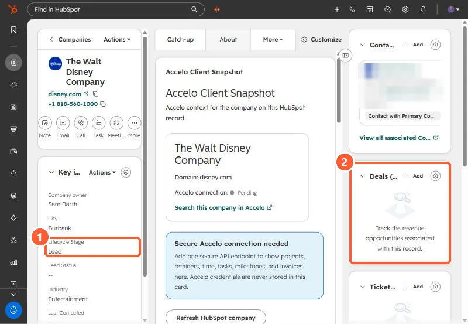

Short answer
Decide what proves each stage, compare every company to that proof, and correct the ones that do not match. In an agency portal I used closed won deals and paid invoices as the proof of being a customer. Some companies marked as customers had only an unpaid onboarding or a quote, and some past clients were still shown as current. Keep HubSpot's rule in mind when correcting: automatic updates only move a lifecycle stage forward, so to set an earlier stage with an import or workflow you clear the value first.
1. Write down the evidence rule
Before touching records, decide what proves each stage. In the agency portal the proof came from invoices and closed won deals. A rule along these lines:
- Current customer: a closed won deal with a paid invoice.
- Former customer: paid in the past, nothing current.
- Not a customer yet: quote sent or onboarding started but unpaid.
2. Compare and list the mismatches
Pull companies with their lifecycle stage, closed won deals, and invoices. In my demo, this company record shows Lifecycle Stage Lead and an empty Deals card, which is the kind of pair you are checking.


In the agency portal, a handful of former clients were moved to former, and companies with only a quote or unpaid onboarding came out of customer.
3. Moving a stage backwards
HubSpot says the default Lifecycle stage property can only be moved forward by HubSpot tools such as imports, forms, the API, and workflows. To set an earlier value with those tools, clear the value first, manually or with a workflow. Setting it by hand on a record works directly.
4. Stop the drift
Deal stage rules can set company lifecycle stages when a deal is created or won. See lifecycle stage automation from deals and customizing lifecycle stages.